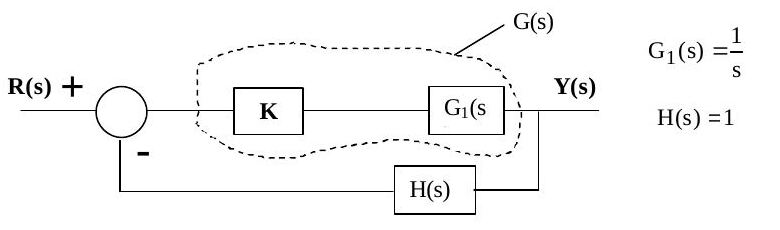
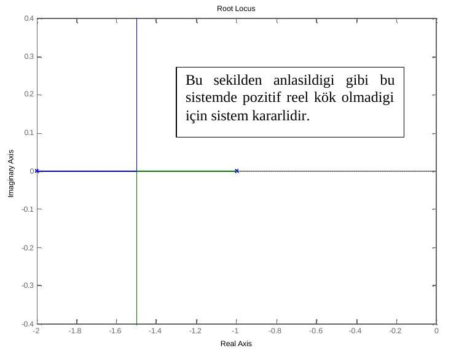

· EEM322
EEM322 Control Systems: The Root-Locus Method – "ders5" Note (2005, author unknown)
EEM322 – Denetim Sistemleri · 31.03.2005 · 16.10.2026
This post is a 6-page third-party lecture note stored in the EEM322 Control Systems folder under the name "Root_locus.pdf". The note carries no author or institution name; according to the PDF properties, it was prepared in Word under the name "ders5.doc" and converted to PDF on 31 March 2005 (the only file owner shown is the username "zeki"). Because the source of this note could not be determined and its Turkish characters were corrupted, it was transcribed with the spelling corrected; the original PDF can be downloaded at the end of the post.
This content belongs to a third-party source; it is shared for archival and nostalgic purposes with the source credited. It will be removed upon request by the rights holder.
Root-locus method
When designing a control system with variable gain, the key point to watch is that the gain values we use keep the system in the stable region. The root locus plot is quite useful for identifying unstable regions (roots in the right half of the complex plane, i.e. to the right of the vertical axis), overdamped systems, and oscillatory systems. The method is somewhat time-consuming, but the results obtained are very important when designing a control system.

The transfer function of this system, with G₁(s) = 1/s and H(s) = 1, is, by Mason's formula:
G_s(s) = G(s)/(1 + G(s)H(s)) = (K/s)/(1 + (K/s)·1) = K/(s + K)
For varying values of K, the roots of the denominator of the transfer function are found and plotted in the complex plane (the gain K normally takes values between 0 and +∞). D(s) = s + K, s + K = 0:
| K | Root |
|---|---|
| 0 | 0 |
| 1 | −1 |
| 2 | −2 |
| 3 | −3 |
At K = 0 the root is at the origin; as K → ∞ the root moves to the left along the real axis, to −∞.
To investigate the stability of a system, it is enough to look at the denominator of the transfer function. For a negative, unity-feedback control system the general expression is G_s(s) = G(s)/(1 + G(s)H(s)). The system response is a function of the denominator and is determined by its roots: 1 + G(s)H(s) = 0. G(s)H(s) can also be written in terms of zeros and poles as:
G(s)H(s) = K(s + z₀)(s + z₁)…(s + z_m) / [(s + p₀)(s + p₁)…(s + p_n)]
Example: G(s) = K/(s² + 3s + 2), H(s) = 1
Characteristic equation:
1 + K/(s² + 3s + 2) · 1 = 0 → s² + 3s + 2 + K = 0 s₁,₂ = [−3 ± √(9 − 4(2 + K))]/2 = −1.5 ± √(1 − 4K)/2
| K | Roots |
|---|---|
| 0 | −1, −2 |
| 1 | −1.5000 ± 0.8660i |
| … | … |
| 100 | −1.5000 ± 9.9875i |
clc;clear;
pay=[1];
payda=[1,3,2];
rlocus(pay,payda)
As can be seen from the figure, this system is stable because it has no roots with a positive real part.
Basic rules for drawing the root locus
- The characteristic equation of the control system is written: 1 + G(s)H(s) = 1 + K·(s + z₁)(s + z₂)…(s + z_m)/[(s + p₁)(s + p₂)…(s + p_n)] = 0.
- The poles and zeros are counted. There will be (n − m) root locus branches going to infinity.
- The roots on the real axis are marked.
- For the branches going to infinity, the asymptote angles are found with β(k) = ±180°(2k + 1)/(n − m), k = 0, 1, …, (n − m − 1); then the point σ where the asymptotes cross the real axis is calculated and the asymptotes are drawn.
- The breakaway and break-in points are found. Breakaway points lie on the real axis between two poles, and break-in points lie between zeros. For A = (s + p₁)(s + p₂)…(s + p_n), B = (s + z₁)(s + z₂)…(s + z_m), the following equation is solved: (dA/ds)·B − A·(dB/ds) = 0.
- The points where the root loci cross the imaginary axis are found: s is replaced by iω, and the expression 1 + K(iω + z₁)…(iω + z_m)/[(iω + p₁)…(iω + p_n)] = 0 is solved for the frequencies.
In the note, the point σ where the asymptotes cross the real axis is written as σ = (p₁ + p₂ + … + p_n)(z₁ + z₂ + … + z_m)/(n − m).
Note: This formula is written incorrectly. The sums of the poles and zeros are not multiplied; they are subtracted from one another: σ = [Σ(poles) − Σ(zeros)]/(n − m). With the notation used here, the poles are −p_i and the zeros are −z_i, so σ = [(−p₁ − … − p_n) − (−z₁ − … − z_m)]/(n − m).
Applying the rules to the example: G(s) = K/(s² + 3s + 2)
Step 1: D(s) = 1 + G(s)H(s) = 1 + K/(s² + 3s + 2) = 1 + K·1/[(s + 1)(s + 2)].
Step 2: Number of locus branches going to infinity: m = 0, n = 2, so n − m = 2 branches go to infinity.
Step 3: The roots (poles, −1 and −2) are plotted in the complex plane.
Step 4: Asymptote angles and the real-axis crossing point:
β(k) = 180°(2k + 1)/2, k = 0, 1 → β(0) = 90°, β(1) = 270°
In the note, the crossing point is calculated as σ = (−1 − 2)(0)/2 = 0.
Note: With the correct formula, σ = [(−1) + (−2) − 0]/2 = −1.5. The asymptotes are vertical lines passing through −1.5, not through the origin; this is also consistent with the MATLAB plot above and with the result in Step 5 (the branches leave the real axis at −1.5 and go vertically).
Step 5: Breakaway point: A = 1, B = s² + 3s + 2; dA/ds = 0, dB/ds = 2s + 3.
A·(dB/ds) − B·(dA/ds) = 0 → 1·(2s + 3) − (s² + 3s + 2)·0 = 0 → 2s + 3 = 0 → s = −1.5
Step 6: Since the root loci do not cross the imaginary axis, it can be concluded that the system is stable; for practice, the imaginary-axis crossing calculation:
s² + 3s + 2 + K = 0, s = iω → −ω² + 3iω + 2 + K = 0 → ω² − 3iω − 2 − K = 0 ω = [3i ± √((−3i)² − 4(−2 − K))]/2 = [3i ± √(−9 + 8 + 4K)]/2 = [3i ± √(4K − 1)]/2
This result shows that the frequency takes an imaginary value; that is, there is no (real) frequency at which the locus crosses the imaginary axis.